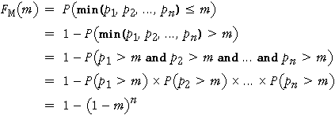
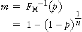

The winning time in our model is the minimum of n normally distributed values. In this page, we investigate ways to efficiently generate these winning times.
Avoiding n evaluations of F-1(p)
Firstly, consider how our random sample of normally distributed values is obtained. Each value is obtained by evaluating F-1(p) where p is a pseudo-random value that is rectangularly distributed between 0 and 1 and F(x) is the normal cumulative distribution function.
Since F(x) and its inverse are increasing functions, the minimum of the normal values that are generated corresponds to the minimum of the underlying rectangular values.
We can therefore avoid (n - 1) evaluations of F-1(p) by finding the minimum of the n rectangular values and only generating the normal value corresponding to it.
Directly generating the minimum of n uniform values
The minimum of n rectangular values is itself a random variable. If we can find its cumulative distribution function, then we can directly generate a value from this distribution.
If we denote the n rectangular values by p1, p2, ..., pn, and their minimum by m, then the cumulative distribution function of m is

The critical ideas in the derivation above are:
We can therefore generate a pseudo-random value, m, from this distribution by generating a single uniform value, p, then evaluating

We can therefore generate a simulated winning time for each year by...
Winning times generated by this method have identical properties to those obtained in a more literal application of the model, so there is no disadvantage to using them.